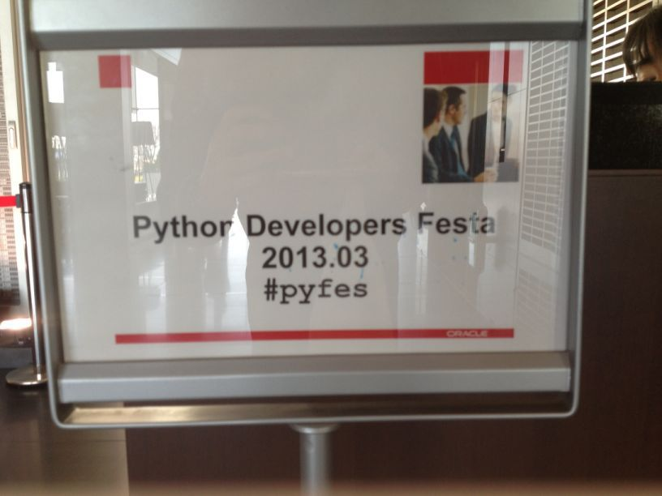
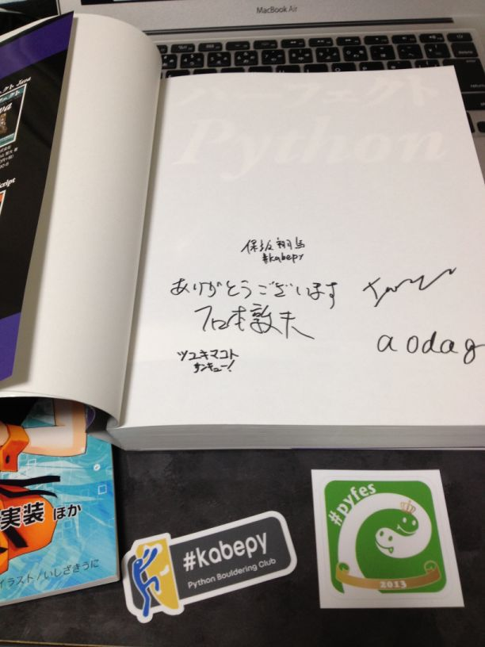

(第33回)Python mini Hack-a-thon に参加してきた #pyhack
当日のイベントページはこちら→ (第33回)Python mini Hack-a-thon - connpass
同日に python django 基礎 : ATND もあり、 どちらに参加するか悩みましたが、こちらに参加することにしました。
当日やったこと
- +lua 対応した MacVim-KaoriYa 試す
- Django 環境構築
+lua 対応した MacVim-KaoriYa 試す
前々から 暗黒美夢王 さん作の neocomplete.vim を使いたいと思っていました。
neocomplete.vim とは neocomplcache.vim の後継で、大きく以下のような特徴があります。
- Vim が +lua かつ、パッチが885以降あてられていることが必要
- neocomplcache.vim よりも高速に補完できる
これを導入するためには Macports を使用している自分には敷居が高かったのですが、 (Homebrew ユーザは比較的容易に導入可能) 20130711版でようやくこの条件がそろったので、 導入してみました。
- .pkg ファイルから lua をインストール
- NeoBundle.vim で neocomplete.vim を入れる……が、エラーをはきまくってしかたない。
しかしpyhackの日に以下のようなアドバイスを頂きました。
https://twitter.com/splhack/status/355800024719953922
https://twitter.com/splhack/status/355864980580610048
そこで一度やり直して見ることに。
- pkgutil を使用して lua をアンインストール
- Macports で lua インストールし直すも liblua.dyld が入っていない
- Mac OS X で Lua を使う : Sadayuki は こんな人 を参考にようやく liblua.dyld が入る。
- これで neocomplete.vim がエラーなく使えるようになる！
しかしお昼を食べてきた後……
https://twitter.com/splhack/status/355920403270610944
午前中の苦労は何だったろう…… いや、あれは必要な犠牲だったんだ(遠い目)
現在は MacVim-KaoriYa 20130713テスト版 を使用して安定稼働しております。
Django 環境構築
最初は Simple Django Example | Authomatic を見ていたのですが、途中で飽きてしまったので、別のことをしました。
これまで Django を試す時は DB は SQLite を使用して、結果は
python manage.py runserver
とコマンドを打って結果がどうなっているのか確認してきましたが、 「一度本番環境に近い環境を作ってみたい」と思い試してみました。
Apache2, MySQL を導入し、Hello, Wold! を表示するのを目標にしてスタート。
まずは Macports で以下をイントール。
- apache2
- mod_wsgi
- mysql5
- mysql5-server
- py27-mysql
途中はまったところは以下。
「ソケットにアクセスできない」と怒られる。(以下エラーメッセージ)
ERROR 2002 (HY000): Can't connect to local MySQL server through socket '/opt/local/var/run/mysql5/mysqld.sock'
解決策
うずら技術メモ を参照
MySQLdb がないと怒られる。No module named MySQLdb
解決策
Macports で入れた py27-mysql をアンインストールし、How to install MySQLdb (Python data access library to MySQL) on Mac OS X? - Stack Overflow を参考に、 MySQL for Python を入れなおす。
mysql_config がないと怒られる
解決策
Mac OS X 10.6.4 における mysql-python のインストールと Django のデータベース設定 | 暇人じゃない を参照
それでも同じエラーがでたので、シンボリックリンクを貼る。
sudo ln -s /opt/local/bin/mysql_config5 /opt/local/bin/mysql_config
文字化けしたメッセージがブラウザに表示される
解決策
未解決。
python manage.py runserver
とコマンドを打つとブラウザに Hello, World! が表示されることは確認しているので、 Apache2 の設定がうまくいっていないものと思われる。 virtualenv を使っていたりするのも関係しているのかな。 Mac と Linux での違いもあるかもしれないがよくわかっていない。
以下を参考にして Apache2 の設定をしたが、結果変わらず……
pyhack終了後
お酒を飲めるような体調ではなかったのと、続きをやりたかったので今回は懇談会には不参加。 結局目標としていたところまでは行かなかったけど、 他にも以下のようなリンクを見つけたので、また時間を取って試してみようと思う。
TinkererでBlogを書こう(Ver1.2)
昨年末 Sphinx Advent Calendar 2012 - connpass で Tinkererでブログを書こう — kashew_nuts-blog という記事を書きましたが、 Tinkerer も Version が1.2になり、運用方法も記事を書いた時と変わってきたので、改めて書き直してみます。
Tinkererとは
Tinkerer とはSphinxを使った Blog 作成ツールです。 Sphinx Advent Calendar 2012 (全部俺) の @usaturn さんや、 Sphinx Advent Calendar 2012 主催の @r_rudi さんもTinkererを使用しています。今回はそのTinkererについて導入から実際に公開するまでの一連の流れを紹介してみたいと思います。
bitbucketの準備
bitbucketに以下の名前でリポジトリ作成
<username>.bitbucket.org (private レポジトリ)
Note
<username>には_(アンダーバー)などの記号を含まないほうが無難です。記号が含まれていた場合、Twitterのような外部サービスと連携したい時に問題が発生することがあります。私のアカウント名は通常 kashew_nuts を使用していますが、そのままのアカウントで作成すると、Tweetボタンで Blog のURLが作成されず困りました。
初期設定
以下のようにすると Blog を書くのに必要なファイル類ができあがります。
$ pip install tinkerer # Tinkererのインストール
$ mkdir myblog
$ cd myblog
$ tinkerer -s # Tinkererの初期セットアップ
次に Blog のタイトルやあなたの名前を登録しましょう。 お好きなエディタで conf.py を編集します。 私は普段 Vim を使用しているので Vim で書きます。 シンタックスハイライトが特別な設定なしで使えるため非常に便利です。
$ vim conf.py
例として以下に私が設定している conf.py を上げたいと思います。 ‘’でくくられている箇所をお好きな内容に変えて設定して下さい。
# Change this to the name of your blog
project = 'kashew_nuts-blog'
# Change this to the tagline of your blog
tagline = 'Load To Pythonista'
# Change this to your name
author = 'Kashun YOSHIDA'
# Change this to your copyright string
copyright = '2011-2013, ' + author
# Change this to your blog root URL (required for RSS feed)
website = 'http://kashewnuts.github.io/'
これで、Tinkererで Blog を書く初期設定は終了です。
Blog を書こう
$ tinkerer -p "first post" # 記事の下書き作成
$ vim 2013/06/16/first_post.rst # 記事の作成
$ tinkerer -b # 記事のHTMLを作成
これで、blog/html/ 以下に記事が作成されます。 どんな記事が作成されたのか、以下のコマンドを打って確認してみましょう。
$ python -m SimpleHTTPServer
ネットワーク受信接続の許可を求められますので、 許可 を選択して下さい。ブラウザのロケーションバーに http://127.0.0.1:8000 とタイプすると、あなたが作成した記事を確認することができます。
Note
SimpleHTTPSererのデフォルトのポート番号は8000ですが、以下のように記述するとポート番号を指定できます。この例ではポート番号を8080に設定しています。
$ python -m SimpleHTTPServer 8080
Blog を公開しよう
いくつかあるようですが、ここは私が実際に使用している方法を紹介したいと思います。 初めに準備した bitbucket リポジトリに以下の内容を上げてしまいましょう。
前回書いた記事 では index.html と blog/ 以下全てと書きましたが、 これだと Blog を開いた時に、http://hogehoge.bitbucket.io/blog/html/index.html と長ったらしいURLになってしまいます。
そこで今回は “blog/html/ 以下全て” の生成物を上げます。
Warning
くれぐれも以下の操作を blog/html/ 以下で行わないで下さい。Tinkerer は “tinker -b” で ファイルを生成するたびにファイルを全て新しく作り直すので、Mercurial の管理情報が消え、 新しい記事を挙げることができなくなります！
これを一番シンプルな方法は、”tinker -b” で生成した “blog/html/” 以下の生成物を myblog とは別のディレクトリで管理することです。
Mercurial を使用した方法を記述します。
# Blog 管理用ディレクトリの準備
$ mkdir public
$ cp -R blog/html/ public/. # スクリプト化すると便利です。
$ cd public
# Mercurial 初期設定
$ hg init
$ vim .hg/hgrc
[paths]
default=ssh://hg@bitbucket.io/<username>/<username>.bitbucket.org
# Blog にpush
$ hg add .
$ hg commit -m "first post"
$ hg push
公開されるまでに数分程度待つかもしれません。数分後 https://<username>.bitbucket.io にアクセスすると、 Blog ページが表示できるようになります。
NEXT STEP
以上で Blog を書く環境が整ったと思いますが、Tinkerer では他の Blog と同じように色々とカス タマイズができます。 事例を紹介しますので、興味を持たれた方は是非挑戦してみて下さい。
- サイドバーに項目追加
- Recent Posts, Tags, Categories
- Twitter Widget
- Search Box
- 記事へ埋め込み
- Twitter のつぶやき
- gist
- コメント欄の追加(Disqus, Facebook)
- Google Analytics の設定
- テーマのカスタマイズ
- Favicon の設定
Python Developers Festa2013.03に参加しました #pyfes
Python Developers Festa2013.03に参加しました 当日は大きく分けて
- ハンズオン、野良ハンズオン
- 発表(プレゼン、LT)
が行われました。
既にBlogにまとめられている方がいて二の足を踏んでしまった感じですが、自分の中で恒例になってしまっているのでつらつらと書いてみます。
あ、ちなみに今回はまだTogetterまとめが作成されていないようですので、今のうちにまとめた方はヒーローになれると思いますよ:D
前回の様子 Python Developers Festa 2012.11に参加しました。 #pyfes — kashew_nuts-blog
(2013/03/20 追記)ヒーロー現る。
Python Developers Festa 2013.03 #PyFes . - Togetter
その他スライド資料・参加者Blogを追加しました。
イベント詳細
{kind=link}

午前中〜プレゼン開始まで
急遽開催された @tk0miya さんによるChefハンズオン(座談会？)に参加しました。みんながみんな ネットワーク環境があるわけではない＆資料なしだったので、Chefってどうゆうもの？というところ から始まり、こうゆう風にすればChef使って幸せに近づけるよというお話までしました。
その後お昼をはさみ、プレゼンが始まるまでにパーフェクトPythonの著者サイン会が行われました。 当日のじゃんけん大会でパーフェクトPythonを勝ち取った人も並んでましたね。自分も貰って来まし た。サインくださった方々ありがとうございました。
{kind=link}

また、 #kabepy ステッカー、2013年限定 #pyfes ステッカーも頂きましたよ
発表(プレゼン, LT)
15:00過ぎから開始。全体的に順調に進んだ気がします。19:00くらいには終了。
@inoshiro #kabepy の紹介
- スライド: Introduction of kabepy
- kabepyとは何か？
- ボルダリング→壁を登るスポーツ
- なぜPython ボルダリングクラブか？→理由は特にない。
- Pythonと言う名のボルダリングシューズがある。
- ロープクライミングのロープの名前がPython
- 2011/12/22発足 Python ボルダリング部 - connpass
- ステッカー作りました。Tシャツ今月末までに出来る予定。
- お手軽。ジムが多い。楽しい。
- kabepyサポーターズ #kabepy Advent Calendar - connpass
@ryu22e PyCon APAC 2013 開催のお知らせ
- スライド： PyCon APAC 開催 & スタッフ募集のお知らせ
- Python APACとは
- 今年のテーマは「The year of Python」12年に1度にふさわしい
- 8月末〜9月中頃を予定
- スタッフになりたい人はGoogle Googleで手を上げてみて下さい！
- PyCon JP Blog
@ymotongpoo Go言語の何か (仮)
- スライド: 20130316 プログラミング言語Go
- プログラミング言語Goのご提案
- 細かい文法を知りたい人は チュートリアルやってみてね。 A Tour of Go
- 更に詳しい資料はスライドシェアで。 20130228 Goノススメ（BPStudy #66）
- 圧倒的現代感！
- 豊富な標準パッケージ Packages - The Go Programming Language
- Go Conference 2013 spring - connpass やります！
@torufurukawa Python の Test/Mock (仮)
- スライド: Mock and patch
- Mockとpatch
- エンジニア足りません。
- モックモジュールPython3.3は標準ライブラリに同梱 unittest.mock
- より詳しい話は公式ドキュメントやVさん、ぁっぉさんの資料を見て下さい。
@tokoroten MS Surfaceでゲームを作った話
- 「Surface買った人！」「しーん……」
- 「静電容量方式は滅びますぞ！」
- デモ動画: 世界最強のタッチパネルディスプレイを買って、ゲームを作ってみた ‐ ニコニコ動画(原宿)
- ゲームを作りましょう。
- 強化人間専用ゲーム鋭意製作中
@hagino3000 Leap Motion
- スライド: Introduction of Leap Motion
- 手の認識に特化したモーションキャプチャデバイス
- 世紀凱旋センサー、接続はUSBもインターフェース
- 高分解能(0.01mm)、早い(Over60FPS)、安い！
- 秘密はSoftware(algorithm)にあるらしいが、それっぽい特許,論文見当たらず。
- HOW TO GET: 88.98USD(送料込み) 5/13以降発行。開発者登録なら1つ無料。
- HOW TO develop: windows7or8, MaxOS10.6 or later、C++,C#,Obj-C,Python等
- 何がおいしいのかが問題→みんなまだ手探り状態。
@nonNoise Arduino+Pythonハッキングの宣伝
- Arduino+Pythonハッキング - connpass
- 来週の24, 24日にやるのできてね！
- PythonでArduinoから受け取ったデータをどう操作するか。
- もう4回くらい実施している。大体20〜30人くらい集まる。
- 次回はハードウェアの見ている世界と、PC、WEBが見ている世界のお話。
- 1day Hacking
@r_rudi Tinkerer
- スライド: Tinkerer for pyfes 201303
- 今日のお題「Tinkerer」SphinxをベースにしたBlogの作成ツール
- Sphinxとは、ドキュメント作成ツール。Pythonの公式ドキュメントにも使われている。
- コードハイライトが綺麗。pygmentsというのを使用しています。
- どういう意味？→「MG」鍛冶屋, 修繕屋、読み方は？→「てぃんからー」
- 欠点
- コマンドラインでしか叩けない。テキストエディタが必要→ブラウザからとかできない。
- 記事が多くなるとbuildに時間がかかる。→カテゴリーやRSSなどがあるため。
- ホスティング方法
- レンタルサーバー、VPS しろうさんが実施している。blog/html/以下を全てコピる。
- github, bitbucket 独自ドメインも可能。
- S3+ Web hostting MercurialやSphinxもこの方法でやっている。(やろうと思っている)しかし転送料でお金かかる
- Dropbox 金額がかからないが、独自ドメインが使えない。→dropbproxというGAEで動くproxy
- おまけ: Amazonで出版とか
@keikubo WebPay
- プロ仕込みのプレゼン
- 開発者向けの決済サービス
- FluxFlex: 1分で使えるホスティング→昨年の6月ぐらいに閉鎖
- Rackhub: 10秒で使えるVPS→競争激しいですけど使ってみて下さい。
- WebPay: 1時間で使えるクレカ決済
- pip install stripe
- 多種多様な言語、プラットフォームへの対応 Ruby, Python, PHP, iOS, Android, Windows8
- 湧き上がる「素晴らしい」のコメントの嵐
- WebPay: 開発者向けクレカ決済サービス
{kind=link}
@voluntas Webmachine ノススメ
- 資料: Webmachine のススメ
- gistプレゼン。レアです。
- RESTツールキット。chefのホスティングで使われている。 ちなみにchefはRubyからアーランに変えてメモリ使用量が21GB→600MBになった。
- http-headers-status-v3.png
{kind=link}
@lab1092 Blender
- スライド: 20130316 blender
- Blenderイベントの宣伝 春だ一番！Blender祭り 3/23 横浜で開催します。
- どんなイベント？→Blenderに限らず、デザインとクラウンドファウンディング視点で。
- 「2013年Blenderの本格的な浸透」
- AlternativeTo - Social Software Recommendations
@2jhari (痛い目にあいたい人LT枠) Webサービスにどれほどの金銭的価値があるのか
- 痛い人枠 #kazepy #しみたん
- インターネットサービスと経済学
- HOW MUCH VALUE?
- 細かい所はどうでもいいんじゃい！
@drillbits fabric
- スライド: Fabric Python Developers Festa 2013.03 #pyfes // Speaker Deck
- インターネットの人名鑑2013
- fablic ネジ、DB
- CUI, Application Deployment
- インストール、設定、起動→これをSSHでやる
@tk0miya 春を先取り！OpsWorks と Chef ではじめる恋色コーデ術！
- スライド: 春を先取り！Ops works と chef ではじめる恋色コーデ術！ #pyfes 2013.03
- 環境構築を自動化。オレオレ環境の撲滅。リリース後の土下座を減らす。
- そうだ、chef使おう。
- 冪等性(べきとうせい)→あるべき姿を定義しておくと、何度chefを実行しても同じ結果になる。
- Community Cookbooks→大抵のツール向けの設定が集約。再利用の精神。
- Opscode Community でいろんな人が書いたCookbookを紹介している。世の中には書きましょうという記事が多いが、こちらを使ったほうがお得。今800ぐらいのCookbookがある（重複はあると思うが）
- chefの種類: chef server, chef-solo, ホスティング。サーバーが20台ぐらいまでならchef soloでいいらしい。
- ちょいツール
- vagrant(ベイグラント)って読むらしい。最近AWSやVMWare Fusionにも対応
- librarian Cookbook管理ツール。依存性解決とDL
- attribute json形式。各Cookbook用の設定。
- 参考ドキュメント: 公式ドキュメント, naoyaさんによる 書籍 、 Blog 、 RyuzeeさんのBlog 、 @tk0miyaさんのBlog
- OpsWorks
- AWSのアプリ管理ツール。環境構築、アプリのデプロイ、インスタンスの起動、終了 管理。
- Rails, PHP, node.jsアプリをサポート
- ハマリまくりです。
- Boxen使わなくても許されるのは2012年までだよね #Mac #Boxen #GitHub - Qiita
@hiroki_ninuma 未定
メモは取ったけどここでは書かない。
@moriyoshi 未定
- MessagePack
- Isuue #121
- cabo インターネットドラフトを提出した。
- Msgpack can't differentiate between raw binary data and text strings · Issue #121 · msgpack/msgpack
- MessagePackのIETFへの提案に関する困惑 - たごもりすメモ
- MessagePack ep.2 〜RFC標準化をめぐる issue 129〜 - Togetter
- Geekなぺーじ:MessagePackがIETF標準化に巻き込まれてる件について
- AnyPack Builder作りました。ソースはその内githubにあげておきます。 moriyoshi/anypackbuilder - GitHub
懇談会
Pyfesが終わった後の、有志での懇談会。何だかあっという間にすぎてました。 @aodag 先生のまさかりが飛びまくってたような気がします。楽しかったですね。
終わりに
また参加できてよかった。普段Pyfesに参加してると、無限コーヒー、電源、無線LAN完備、広いスペースなどこれ以上ないと思えるくらいのものが用意されています。今回はトラブルで会場の無線LANが終始使えないというトラブルがありましたが、もとはOracleさんを始め、コミュニティのみなさんのご好意によってなりたっているのだよなと思い起こさせる日になりました。また次回参加できればいいなと思います。